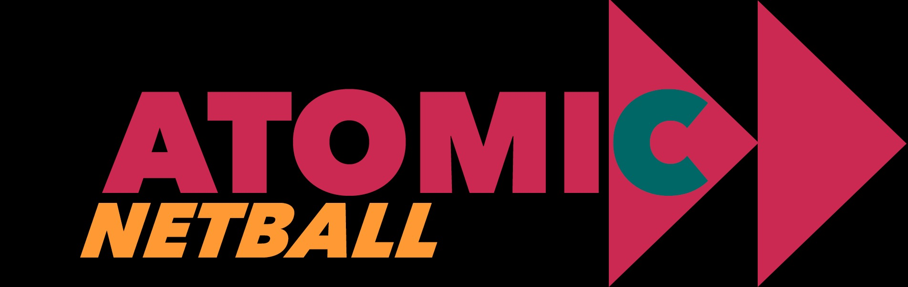

Train FAST · Play FASTER
A six-week online guided summer speed development programme for young sports players, aged 12 to 18.
With Marcus Watson & Dr David Silver PhD
A six-week online guided summer speed development programme for young sports players, aged 12 to 18.
With Marcus Watson & Dr David Silver PhD
A clear, structured programme that helps your child get measurably faster, stronger and more confident over six weeks of the school summer holidays — built by a chartered physiotherapist with a PhD in youth rugby and coached alongside a former professional and Olympic athlete.
Speed is the single most impactful quality in sport. It decides whether a player makes the tackle, beats the defender, or is the one who recovers first. It is also the quality most often left to chance in youth sport. Young players are often told to "run more" — but not actually coached on how to develop and harness speed.
ASW is six weeks of structured, age-appropriate strength and speed coaching. Over the 12 sessions your child will:
Become measurably quicker over 10 metres — the most sport-relevant kind of speed.
Improve posture, knee drive, stride frequency and ground contact.
Build lower-limb strength and jumping power that protect against injury.
Sharpen change-of-direction and deceleration ability.
Athletes who understand are athletes who improve.
Day 1 baseline and Day 12 retest — a one-page report compares the two.
ASW is a partnership between two highly skilled and experienced coaches. A chartered physiotherapist with twenty years in private youth sports medicine, and a former Premiership, international, and Olympic rugby athlete.
Marcus is a former pro renowned for his professionalism, training dedication, and athleticism. He has lived every step of the academy and senior pathway and brings the player's perspective to ASW. Marcus played professionally with London Irish, Wasps, Newcastle Falcons, and Benetton Treviso, and won a Rugby 7s silver medal at the Rio 2016 Olympics. He is now a professional skills and performance coach working with aspiring young athletes across a range of sports.
David has been Head of Medical Services at Cobham Rugby since 2008. His doctoral research at St Mary's University was on concussion in youth rugby and he is a consultant to the Rugby Football Union. Across 20 years of practice, David has carried out more than 20,000 consultations. He is the founder of Athena Physio and was Lead Physiotherapist at King's College School. In practice: your child is being coached by someone who treats youth injuries for a living. Every session is tailored to their specific needs.
Two sessions a week for six weeks — twelve sessions in total. Each session is between 35 and 50 minutes including warm-up and cool-down.
On each video-guided session, your child opens the Atomic app and presses play. They are walked through an activation, the main exercises and a cool-down by a coach on screen. Every exercise has a short demonstration video. They tick the session off when they are done. They can leave a comment for their coaches through the app.
Atomic is not a generic fitness app. It is a clinical-grade platform built by David and Marcus. Every session has been written by them specifically for your child's age-specific needs.
| Week | Theme | Session A | Session B |
|---|---|---|---|
| 1 | Test & learn the movement shapes | In-person testing day at Cobham Rugby + demo | Mechanics & posture (home, video-guided) |
| 2 | Acceleration — the first 10 metres | Acceleration drills on the pitch | Strength & plyometrics foundations at home |
| 3 | Top speed — opening the engine up | Maximum-velocity sprints on the pitch | Posterior-chain (glutes, hamstrings, calves) at home |
| 4 | Resisted speed — building force | Resisted sprints on the pitch | Single-leg strength at home |
| 5 | Change direction without losing speed | Change-of-direction patterns on the pitch | Reactive strength & core at home |
| 6 | Bring it together — re-test | Game-speed integration on the pitch | In-person retest day at the club |
Testing is what makes ASW different. You and your child want improvement, and we hand you the numbers that show it.
Day 1: Thursday 2nd July 2026 · 18:00–19:00 · Cobham Rugby
Day 12: Thursday 3rd September 2026 · 18:00–19:00 · Cobham Rugby
If you cannot make these dates we will do all we can to add additional testing sessions within those two weeks. Please email David@DrDavidSilverPhD.com to request.
Your child arrives in normal training kit. The session lasts around 40 minutes and parents are welcome on the sideline. We measure five things. Day 1 finishes with a short briefing for parents — how the next sessions work, a walk-through of the app, and a Q&A.
We repeat the same five tests in the same order. We compare your child's numbers against their own baseline. Each athlete and parent receives a report with the numbers, the percentage change, and a short coach commentary. The session closes with a friendly relay and a group photo.
| What we measure | What that means in plain English |
|---|---|
| 10-metre sprint, timed by laser gates | How quickly they accelerate — the first phase of every sprint in rugby. |
| 30-metre sprint | Whether they are limited by acceleration or by top speed. |
| Countermovement jump (CMJ) | How much power their legs produce, measured in cm of jump height. Each leg and both together. |
| Peak Force Isometric Pull | How much force they can produce in extension. |
| 5-0-5 change-of-direction test | How quickly they can stop, turn and re-accelerate. The cut every sports player has to make. |
Every parent should ask whether a programme is safe. The honest answer is, nothing in sport is injury risk-free, but ASW is built specifically to reduce injury risks.
The less your child relies on you, the better the programme works. Here is what you actually need to provide:
Encouragement, not enforcement. The athletes who get the most out of this are the ones whose parents check in on the weekly progress and ask their child what they liked — not the ones standing over them with a stopwatch. The coaching is our job. Your job is to cheerlead.
Pick the level of coaching that suits you and your child. Every tier includes the full 12-session programme.
The summer programme is the headline. But many athletes, and many parents, want to keep going once the six weeks are done. That is what ASW Year-Round is for. A year-round subscription on the Atomic app: in-season conditioning through the autumn, off-season strength through the winter, pre-season acceleration in the spring.
or £290/year — saves 17%
or £490/year — saves 17%
ASW Year-Round is optional. Parents choose it because the work done in summer doesn't fade through the season.

Sister programmeAtomic is proud to present Atomic Netball. The same gold standard, tailored programming, built for aspiring netballers.
Pick Bronze, Silver, Gold or VIP from the pricing section.
Parent details, child details, brief medical history, parental consent. Pay securely by card.
You'll receive a confirmation email and an Atomic App login link the same day. Your child is ready for Day 1 in early July.